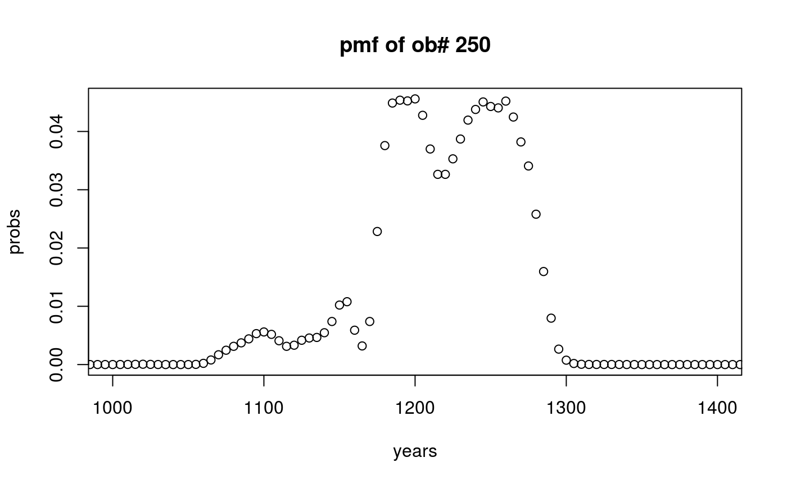
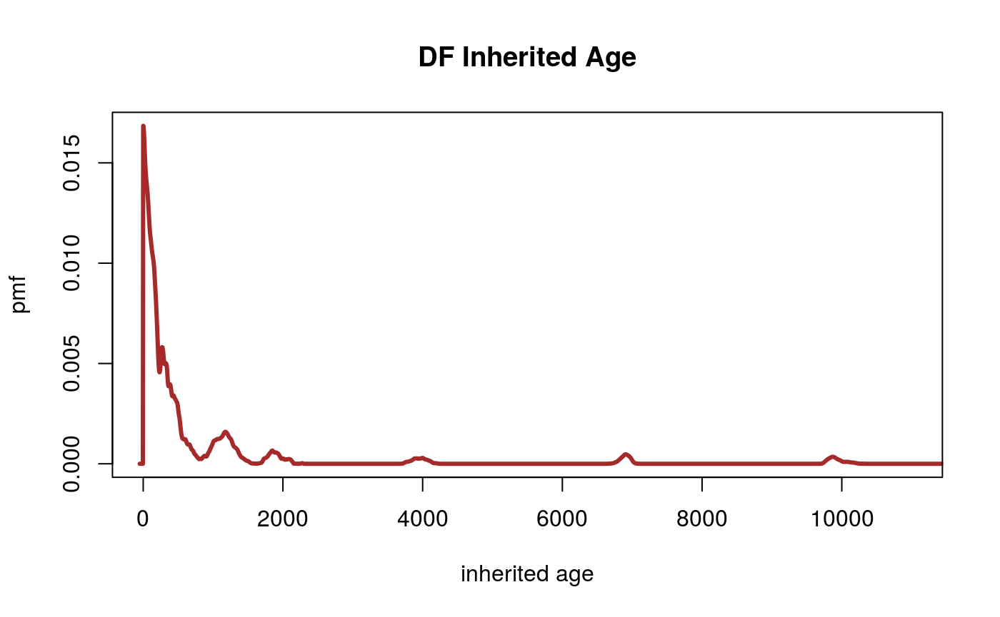
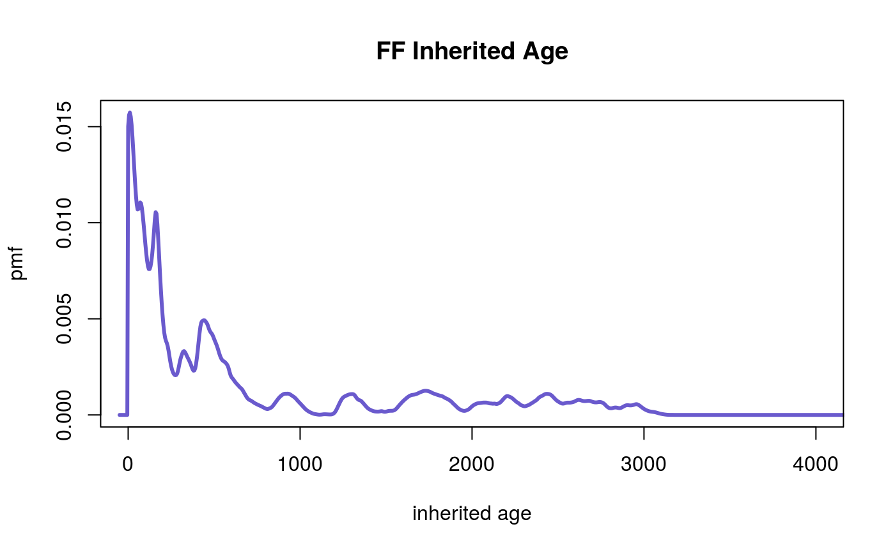
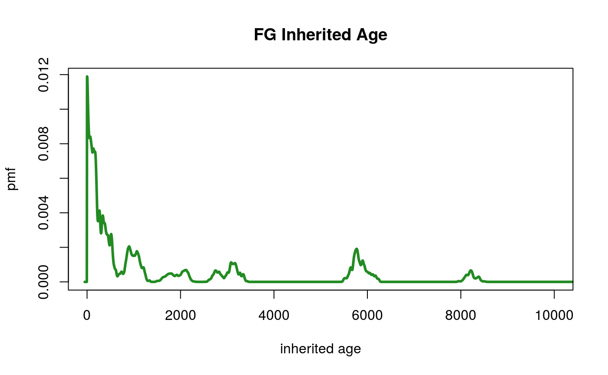
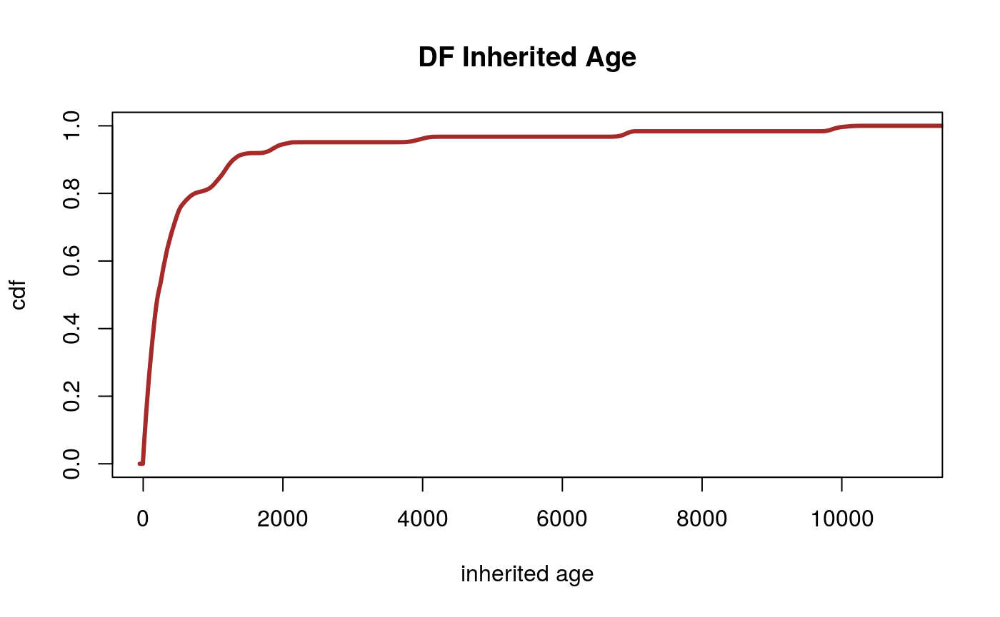
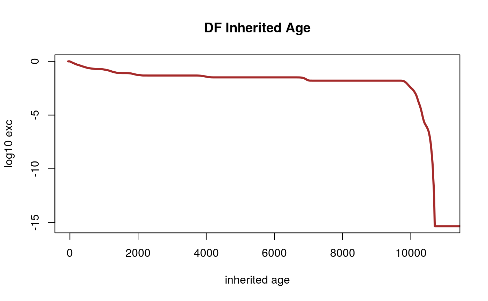
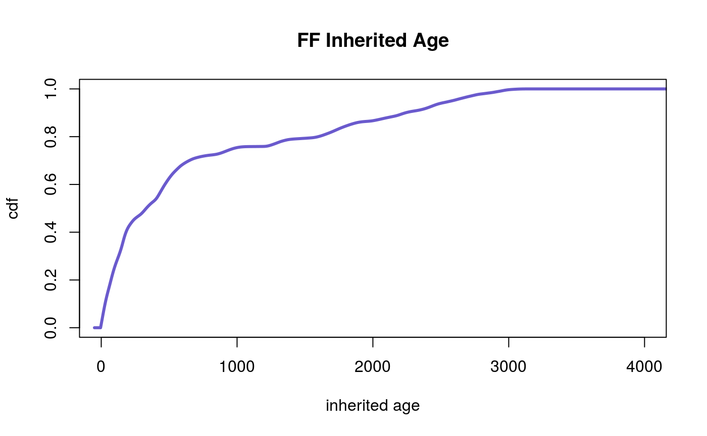
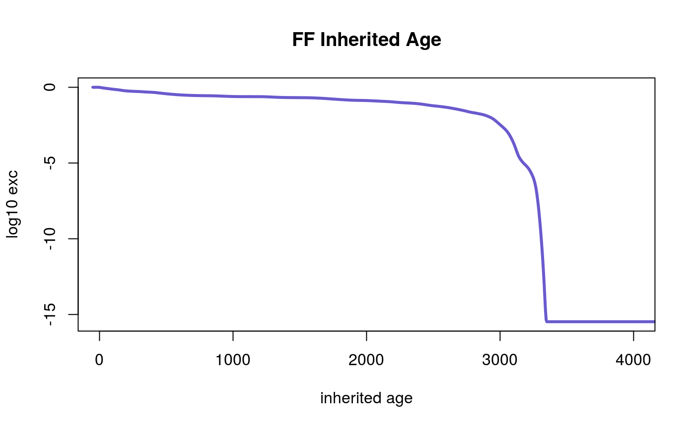
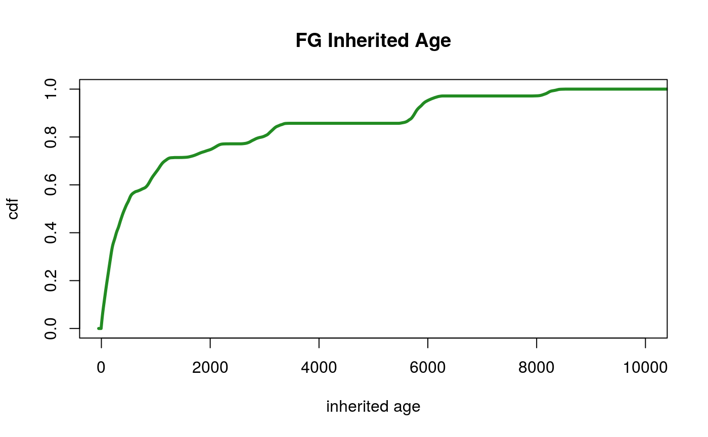
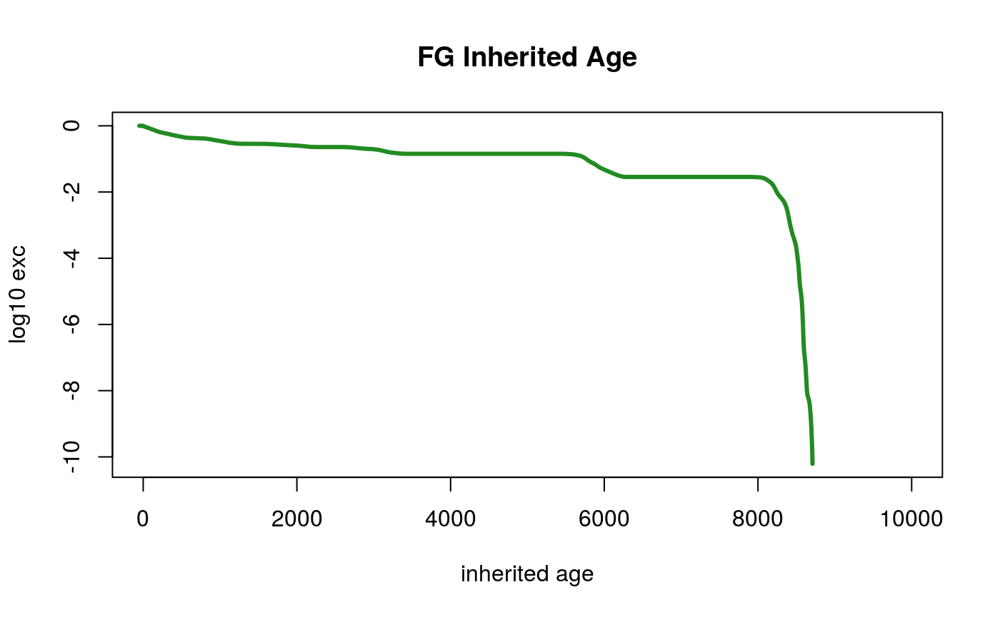

muddier.Rmdmuddier
The package is inspired by the field of fluvial geomorphology. Correcting for the inhertied ages of radiocarbon-dated charcoal in samples of debris-flow deposits in headwater streams concerns a particular application of deriving a PMF from two parent PMFs through convolution. The functions in are an attempt to abstract the particulars of the application into a more general set of tools for converting emprical observational data into CDFs, PMFs, and for deriving PMFs from multiple parent PMFs.
The muddier package includes data from Lancaster & Casebeer (2007) on charcoal samples taken from bank stratigraphy adjacent to headwater streams in the OCR. The table charcoal contains site data from the field surveys where they collected the charcoal samples. The table char_pmfs is the radiocarbon age distribution associated with each sample. To load the data, you can use the data function, or simply type library(muddier).
library(muddier)
# load package data without loading package
# data(charcoal, package = 'muddier')
# data(char_pmfs, package = 'muddier')
# inspect charcoal table
head(charcoal)
#> site_id family facies mn rank
#> 1: BC-52 BC-52 DF -44.878432 1
#> 2: BC-50 BC-50 DF -34.854693 2
#> 3: BC-49 BC-49 DF -29.771460 3
#> 4: GRC_102 GRC_102 DF -22.887912 4
#> 5: BC-31 BC-31 FG -5.023305 5
#> 6: GRC-8 GRC-8 FG -1.462758 6The charcoal dataset has 370 observations listed as rows. The rownames of the object and the first column of data are the site ids. At sites where the researchers took multiple samples, the site ids will have letters appended to them (eg. LK-187a, LK-187b, LK-187c). The family column is the site id stripped of any ending letters, so that all observations from the same site share the same family id. Researchers classified the deposit type of samples as fluvial fines (FF), fluvial gravels (FG) and debris-flow deposits (DF). The facies column indicates the facies type using the two-letter classification codes (FF, FG, DF). The mn column is the mean sample age BP as derived from the pmf in char_pmfs, and rank is the ordinal rank of each sample from youngest to oldest.
If we examine the dimensions of each dataset, we see that both have 370 observations, but char_pmfs has 4,430 columns. If we plot the values of a row against the values of the columns names, the result is the age distribution pmf of the sample.
library(magrittr)
# compare dimensions of objects
dim(charcoal)
#> [1] 370 5
dim(char_pmfs)
#> [1] 370 4430
years <- char_pmfs %>% colnames %>% as.numeric
probs <- char_pmfs[250,] %>% as.numeric
plot(years, probs, xlim=c(1000,1400), main='pmf of ob# 250')
To produce these two datasets, I performed several operations on a csv file converted from the Excel file containing the original Lancaster & Casebeer (2007) data. The file used to perform these operations is stored in the data-raw folder on the github reposity for this project. Compared to the original data, this data has been sorted by mean age, and split into two datasets, one for sample variable data and one for numeric pmf vectors associated with each sample.
Before we begin analyzing the data, I would like to verify that the datasets have been sorted correctly, and that the pmfs all sum to 1. First I will make sure the rownames of the two datasets match, then I will test that each row of char_pmfs sums to 1. Finally, I want to make sure the calculated means in charcoal match the means of the pmfs in char_pmfs. To do this, I use the testthat package which employs the function expect_equal. If the two arguments are equal to within a tolerance range, the test passes silently. If the two arguments are not equal, the test fails with a warning. Failure causes abortion of vignette construction, so every time you see a test run in code, that means it has passed. I will explicitly mark unexecuted lines of code with the comment # not run at the top of the code snippet.
library(testthat)
#>
#> Attaching package: 'testthat'
#> The following objects are masked from 'package:magrittr':
#>
#> equals, is_less_than, not
# load package data
data(charcoal, package = 'muddier')
data(char_pmfs, package = 'muddier')
years <- char_pmfs %>% colnames %>% as.numeric
mns <- apply(char_pmfs, 1, function(a) weighted.mean(years, a))
# test rownames are equal
# test means are equal
test_that('charcoal and char_pmfs match', {
expect_equal(rownames(charcoal), rownames(char_pmfs))
expect_equal(as.numeric(charcoal$mn), as.numeric(mns))
})
# test the pmfs sum to 1
sums <- apply(char_pmfs, 1, sum) %>% as.numeric
ones <- rep(1, nrow(char_pmfs))
max(sums-ones) # examine tolerance
#> [1] 4.51155e-05
test_that('pmfs in char_pmfs sum to 1', {
expect_equal(sums, ones, tolerance = 1e-4)
})Note that the pmfs will not sum exactly to one due to rounding error. First I examine the maximum size of the rounding error with max(sums-ones). I explictly set tolerance = 1e-4 to ingore this rounding error. Having passed the initial round of tests, I am confident the two datasets are correctly ordered and match, and we can proceed to calculate inherited age.
charcoal is organized as a data.table to enable simple subsetting operations by the user. The convenient .N term for delineating number of observations is convenient for producing summary statistics, when combined with by indicated the variable for which to count observations. The data.table format allows the user to treat column names as variables when inside brackets, so subsetting a data.table using a logical test is as straightforward as charcoal[facies == 'DF'].
library(data.table)
# subset by facies
df_count <- charcoal[facies == 'DF', .N, by = family]
ff_count <- charcoal[facies == 'FF', .N, by = family]
fg_count <- charcoal[facies == 'FG', .N, by = family]
# family ids of sites with > 3 obs
df_count[N>3]
#> family N
#> 1: LK_0.16 9
#> 2: LK_151 10
#> 3: LK_0.42 10
#> 4: LK_67 10
#> 5: LK_31 9
#> 6: UK_53 8
#> 7: LK_145 6
ff_count[N>3]
#> family N
#> 1: LK_118 11
#> 2: LK_148 8
#> 3: LK_187 10
fg_count[N>3]
#> family N
#> 1: DFK_140 13
#> 2: DFK_141 8
#> 3: LK_36 6
#> 4: UK_1 8Inherited age is the age of the charcoal before becoming entrained in bank deposits. By taking multiple samples of a facies type at a single sampling site, Lancaster & Casebeer (2007) were able to estimate a distribution range around inherited age.
charcoal is intentionally sorted by rank so that an index of ranks is equivalent to the index of observations by row. Furthermore, the rank number of a sample from charcoal is equivalent to row number of the pmf for the same sample in char_pmfs. Rather than searching by site_id, I have elected to use rank number, and so the function rank_list(ftype, dat = charcoal, min_count = 3) returns the ranks of observations of a given facies type from dat above a minimum count min_count, with dat set to the charcoal data as a default, and minimum count set to 3.
The concluding test in the snippet tells me that the ranks returned by the function rank_list() have the same family ids as the subsets in the previous example.
df_ranks <- rank_list('DF')
ff_ranks <- rank_list('FF')
fg_ranks <- rank_list('FG')
# inspect output
df_ranks[[1]]
#> [1] 20 34 36 44 51 55 62 83 153
# family ids pulled by rank
df_by_ranks <- charcoal[rank %in% unlist(df_ranks), family] %>% factor %>% levels %>% sort
ff_by_ranks <- charcoal[rank %in% unlist(ff_ranks), family] %>% factor %>% levels %>% sort
fg_by_ranks <- charcoal[rank %in% unlist(fg_ranks), family] %>% factor %>% levels %>% sort
# family ids pulled by count
df_by_count <- df_count[N>3,family] %>% unlist %>% sort
ff_by_count <- ff_count[N>3,family] %>% unlist %>% sort
fg_by_count <- fg_count[N>3,family] %>% unlist %>% sort
test_that('rank list matches family ids', {
expect_equal(df_by_ranks, df_by_count)
expect_equal(ff_by_ranks, ff_by_count)
expect_equal(fg_by_ranks, fg_by_count)
})I can examine the pmfs associated with a rank list using the function pmf_by_rank(ranks, pmfs = char_pmfs). Because the default argument for pmfs is set to char_pmfs, this second argument can be ommitted in this instance. When passed a vector of ranks to the first argument ranks, pmf_by_rank returns a data.table with pmfs for each rank stored by row, with probabilities stored in columns and year values stored as column names.
When passed a list of rank vectors, as output by rank_list, to the first argument ranks, pmf_by_rank returns a list of data.tables, each containing the pmfs associated with ranks in the rank list, with probabiliites stored in column and year values stored as column names.
To test the functionality of pmf_by_rank, I am mostly concerned that I have inadvertently scrambled the pmfs. I am already highly confident the rows of both datasets match, and the pmfs sum to 1, so now I would like to ensure they are ordered within each family from youngest to oldest.
# return pmfs by rank
df_pmfs <- pmf_by_rank(df_ranks)
ff_pmfs <- pmf_by_rank(ff_ranks)
fg_pmfs <- pmf_by_rank(fg_ranks)
# list wrapper for weighted.mean
get_means <- function(pmfs, years) {
lapply(pmfs, function(a) lapply(1:nrow(a), function(b, c) weighted.mean(years, c[b,]), c = a))
}
df_mns <- get_means(df_pmfs, years)
ff_mns <- get_means(ff_pmfs, years)
fg_mns <- get_means(fg_pmfs, years)
test_that('pmfs are sorted in ascending age', {
for (i in seq_along(df_mns)) {
expect_equal(as.numeric(df_mns[[i]]), sort(as.numeric(df_mns[[i]])))
}
for (i in seq_along(ff_mns)) {
expect_equal(as.numeric(ff_mns[[i]]), sort(as.numeric(ff_mns[[i]])))
}
for (i in seq_along(fg_mns)) {
expect_equal(as.numeric(fg_mns[[i]]), sort(as.numeric(fg_mns[[i]])))
}
})If we are trying to characterize the distribution of inherited ages from the range of age distributions at a particular site, we can reason that the charcoal in the samples was no older than the youngest piece of charcoal in the set when the samples became entrained as a bank deposit, simply because the youngest sample had to become charcoal before becoming a bank deposit. By this logic, we can characterize the distribution of inherited ages a given site by subtracting the youngest age distribution from the age distribution of each sample via convolution.
df_cl <- convo_list(df_ranks)
#> Warning in convo_list(df_ranks): NAs introduced by coercion
ff_cl <- convo_list(ff_ranks)
#> Warning in convo_list(ff_ranks): NAs introduced by coercion
fg_cl <- convo_list(fg_ranks)
#> Warning in convo_list(fg_ranks): NAs introduced by coercion
# TESTING CODE #
# although my system issued an NA warning
# a brute force screen shows no NAs produced
# i think it refers to stripped row/col names
screen_for_NAs <- function(cl) {
for (i in seq_along(cl)) {
site <- cl[[i]]
for (j in seq_along(site)) {
ob <- site[[j]]
for (k in seq_along(ob)) {
if(is.na(ob[k])) print(i, j, k)
}
}
}
}
screen_for_NAs(df_cl)
screen_for_NAs(ff_cl)
screen_for_NAs(fg_cl)
# slight variation on list wrapper
pmf_means <- function(pmfs, years) {
lapply(pmfs, function(a) lapply(a, function(b) weighted.mean(sort(years), b)))
}
dfc_mns <- pmf_means(df_cl, years)
ffc_mns <- pmf_means(ff_cl, years)
fgc_mns <- pmf_means(fg_cl, years)
test_that('convolved pmfs are sorted in ascending age', {
for (i in seq_along(dfc_mns)) {
expect_equal(as.numeric(dfc_mns[[i]]), sort(as.numeric(dfc_mns[[i]])))
}
for (i in seq_along(ffc_mns)) {
expect_equal(as.numeric(ffc_mns[[i]]), sort(as.numeric(ffc_mns[[i]])))
}
for (i in seq_along(fgc_mns)) {
expect_equal(as.numeric(fgc_mns[[i]]), sort(as.numeric(fgc_mns[[i]])))
}
})
# because we convolved the pmfs, check that they sum to 1
get_sums <- function(pmfs) {
apply(pmfs, 2, sum)
}
list_sums <- function(pmfs) {
lapply(pmfs, get_sums) %>% unlist %>% as.numeric
}
dfc_sums <- list_sums(df_cl)
dfc_ones <- rep(1, length(dfc_sums))
max(dfc_sums-dfc_ones) # examine tolerance
#> [1] 3.542853e-05
ffc_sums <- list_sums(ff_cl)
ffc_ones <- rep(1, length(ffc_sums))
fgc_sums <- list_sums(fg_cl)
fgc_ones <- rep(1, length(fgc_sums))
test_that('pmfs in char_pmfs sum to 1', {
expect_equal(dfc_sums, dfc_ones, tolerance = 1e-4)
expect_equal(ffc_sums, ffc_ones, tolerance = 1e-4)
expect_equal(fgc_sums, fgc_ones, tolerance = 1e-4)
})The inherited age convolutions include values below zero. This occurs in the specific case of subtracting the youngest age from itself, which creates a distribution centered on zero, and approximately half of the values in the PMF will be below zero. Because we know that inherited ages must be positive, we can truncate the pmf at zero by setting probabilities at values below zero to zero using the trunc_0. We then need to renormalize the truncated using the normalize function, or we can do both at once using the trunc_norm wrapper.
trunc_list <- function(pmfs, yrs=sort(years)) {
lapply(pmfs, function(a) lapply(a, function(b) trunc_norm(as.numeric(unlist(b)), yrs)))
}
df_trc <- trunc_list(df_cl)
ff_trc <- trunc_list(ff_cl)
fg_trc <- trunc_list(fg_cl)
# TESTING CODE #
# test that truncated pmfs do not contain values below zero
# sum probabilities of values below zero in a vector
sum_subzero <- function(pmf, index = sort(years)) {
pmf <- pmf %>% unlist %>% as.numeric
sum(pmf[index<0])
}
# list wrapper for sum_subzero
subzero_sum <- function(pmfs, index = sort(years)) {
lapply(pmfs, function(a) lapply(a, function(b) sum_subzero(b,index))) %>% unlist %>% as.numeric
}
df_szs <- subzero_sum(df_trc)
ff_szs <- subzero_sum(ff_trc)
fg_szs <- subzero_sum(fg_trc)
# vector of zero to compare to for test
df_zs <- rep(0, length(df_szs))
ff_zs <- rep(0, length(ff_szs))
fg_zs <- rep(0, length(fg_szs))
test_that('truncated pmfs do not contain values below zero', {
expect_equal(df_szs, df_zs)
expect_equal(ff_szs, ff_zs)
expect_equal(fg_szs, fg_zs)
})
# test that truncated pmfs are renormalized and sum to one
list_sums <- function(pmfs) {
lapply(pmfs, function(a) lapply(a, sum)) %>% unlist %>% as.numeric
}
dft_sums <- list_sums(df_trc)
dft_ones <- rep(1, length(dft_sums))
max(dft_sums-dft_ones) # examine tolerance
#> [1] 0
fft_sums <- list_sums(ff_trc)
fft_ones <- rep(1, length(fft_sums))
fgt_sums <- list_sums(fg_trc)
fgt_ones <- rep(1, length(fgt_sums))
test_that('truncated pmfs are renormalized and sum to 1', {
expect_equal(dft_sums, dft_ones)
expect_equal(fft_sums, fft_ones)
expect_equal(fgt_sums, fgt_ones)
})df_dt <- lapply(df_trc, rack) %>% rack %>% rowSums %>% normalize
ff_dt <- lapply(ff_trc, rack) %>% rack %>% rowSums %>% normalize
fg_dt <- lapply(fg_trc, rack) %>% rack %>% rowSums %>% normalize
plot(sort(years), df_dt, type = 'l', lwd = 3, col = 'brown', xlim = c(0,11000), main = 'DF Inherited Age', xlab = 'inherited age', ylab = 'pmf')
plot(sort(years), ff_dt, type = 'l', lwd = 3, col = 'slateblue', xlim = c(0,4000), main = 'FF Inherited Age', xlab = 'inherited age', ylab = 'pmf')
plot(sort(years), fg_dt, type = 'l', lwd = 3, col = 'forestgreen', xlim = c(0,10000), main = 'FG Inherited Age', xlab = 'inherited age', ylab = 'pmf')
df_cdf <- df_dt %>% to_cdf
ff_cdf <- ff_dt %>% to_cdf
fg_cdf <- fg_dt %>% to_cdf
df_exc <- df_dt %>% to_exceed
ff_exc <- ff_dt %>% to_exceed
fg_exc <- fg_dt %>% to_exceed
#> Warning in to_exceed(.): NaNs produced
plot(sort(years), df_cdf, type = 'l', lwd = 3, col = 'brown', xlim = c(0,11000), ylim = c(0,1), main = 'DF Inherited Age', xlab = 'inherited age', ylab = 'cdf')
plot(sort(years), df_exc, type = 'l', lwd = 3, col = 'brown', xlim = c(0,11000), main = 'DF Inherited Age', xlab = 'inherited age', ylab = 'log10 exc')
plot(sort(years), ff_cdf, type = 'l', lwd = 3, col = 'slateblue', xlim = c(0,4000), main = 'FF Inherited Age', xlab = 'inherited age', ylab = 'cdf')
plot(sort(years), ff_exc, type = 'l', lwd = 3, col = 'slateblue', xlim = c(0,4000), main = 'FF Inherited Age', xlab = 'inherited age', ylab = 'log10 exc')
plot(sort(years), fg_cdf, type = 'l', lwd = 3, col = 'forestgreen', xlim = c(0,10000), main = 'FG Inherited Age', xlab = 'inherited age', ylab = 'cdf')
plot(sort(years), fg_exc, type = 'l', lwd = 3, col = 'forestgreen', xlim = c(0,10000), main = 'FG Inherited Age', xlab = 'inherited age', ylab = 'log10 exc')